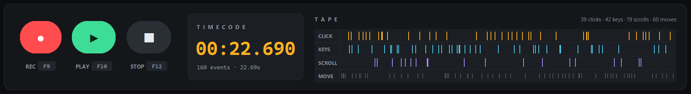
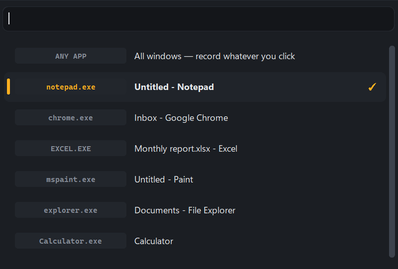
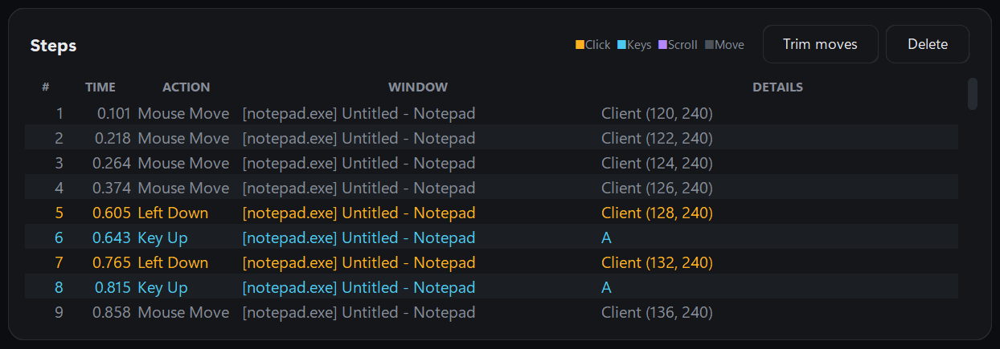
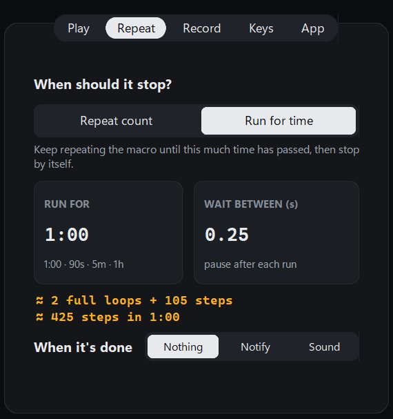
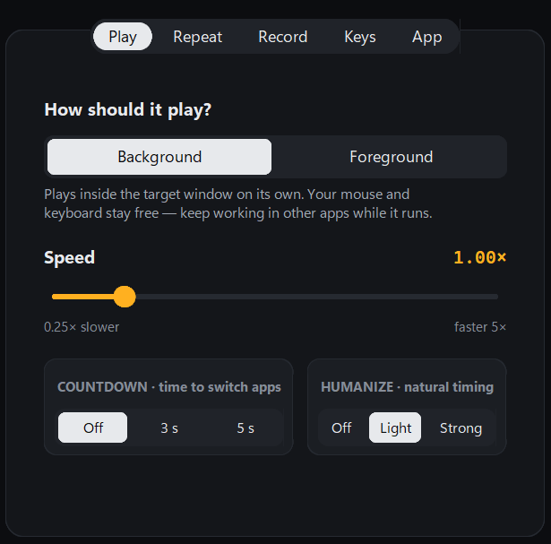
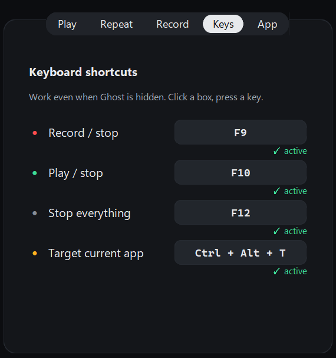
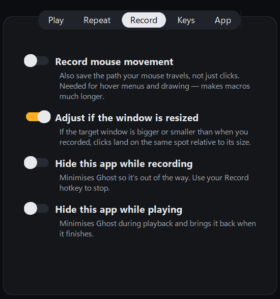
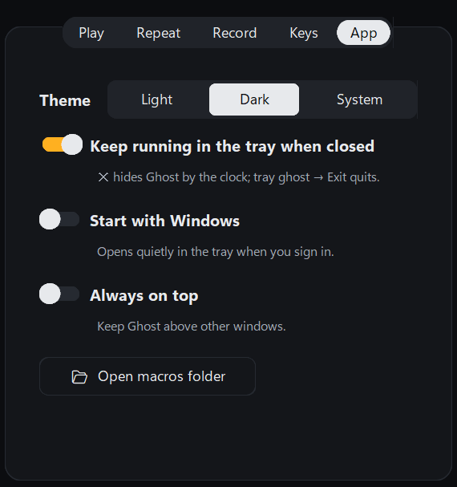

Every feature, in detail
What each part of Ghost Macro Recorder does and where to find it. Every screen below is the real app.
Record and play like a tape deck
Big record, play and stop buttons and a running timecode. The live tape draws every click, key, scroll and mouse move as a coloured tick, and a playhead sweeps across it while a macro plays.
- Amber ticks are clicks, cyan keys, violet scrolls, grey mouse moves
- F9 records, F10 plays, F12 stops everything
- The timecode follows playback step by step

Point it at the app you want
Search the list of open windows, press Pick window and click on the app, or press Ctrl Alt T while you are in it.
- This window only: clicks in other apps are left out
- Every window: each step remembers which app it happened in
- The chosen app stays in the list even if you minimise it

See and edit every step
Each recorded step is listed with its time, action, window and details, colour-coded like the tape. Remove what you don't need before you play.
- Delete selected steps or trim every mouse move in one click
- New, Open and Save macros as .json files
- Ghost asks before throwing away unsaved work

Repeat N times, or run for a set time
Loop a macro a fixed number of times, forever, or for an exact length of time. A live estimate shows how many loops and steps will fit.
- Times: 3, 10, or 0 for forever
- Run for: 1:00, 90s, 5m or 1h
- Wait between runs, and a notification or sound when it is done

Play it your way
Background mode plays inside the target window on its own. Foreground mode uses the real mouse for apps that ignore background input.
- Speed from 0.25× to 5×
- A 3 or 5 second countdown before playing
- Humanize: light or strong random variation per pause

Hotkeys that work anywhere
Record, play, stop and target with a key press, even while Ghost is hidden in the tray. Click a box and press any key or combo to change it.
- Each key shows active, or taken by another program
- A taken key offers a free replacement in one click
- Letters need Ctrl or Alt so you can still type them

Record exactly what you need
Choose what goes on the tape and how Ghost behaves while it records and plays.
- Record mouse movement for hover menus and drawing
- Keep clicks on target when the window is resized
- Hide Ghost while recording or playing

Made for everyday use
Ghost sits in the tray by the clock, starts with Windows if you like, and keeps one copy running so hotkeys never clash.
- Light, dark or system theme
- Keep running in the tray when closed, start with Windows
- Always on top, and one click to your macros folder

All settings at a glance
Every option in the Settings panel and what it is for.
| Tab | Setting | What it does |
|---|---|---|
| Play | Background / Foreground | Background sends input to the window; Foreground moves the real mouse and keys. |
| Play | Speed, countdown, humanize | 0.25× to 5×; 3 or 5 s before starting; random variation in pauses. |
| Repeat | Repeat count / Run for time | A number of runs (0 = forever) or a duration such as 1:00 or 5m. |
| Repeat | Wait between, when it's done | Pause after each run; notification or sound at the end. |
| Record | Mouse movement, resize, hide | Path recording, scaling for resized windows, hiding Ghost while busy. |
| Keys | Four global hotkeys | Record/stop, play/stop, stop everything, target current app. |
| App | Theme, tray, startup, on top | How Ghost looks and where it lives on your PC. |
Get Ghost Macro Recorder
Version 1.0.0 · 33.9 MB · Windows 10 and 11 · free, no account
Windows blocked it? Here's why.